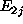
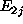
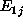
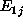
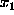
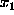
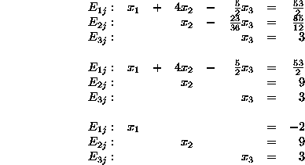

Given the set of linear equations:
Let's look at the solution graphically first.
Figure 1:

Figure 2:

Figure 3:

Figure 1 is the plane of  , Figure 2 is the plane of ,
and Figure 3 is the plane of
, Figure 2 is the plane of ,
and Figure 3 is the plane of  .
.
The final result will be the intersection of the three planes:

One way of solving the equations:
 by 2; multiply  by 3 and subtract it
from
by 2; multiply  by 3 and subtract it
from  to cancel
to cancel  from
from  ; subtract the new
; subtract the new
 from
from  to cancel  from
to cancel  from  :
:

 by -18; multiply
by -18; multiply  by 2 and add it to
by 2 and add it to
 to cancel
to cancel  from
from  :
:
 , and substitute it into
, and substitute it into  to solve
for
to solve
for  ; then substitute
; then substitute  and
and  into
into  and solve
for
and solve
for  :
:

So,  = -2,
= -2,  = 9 and
= 9 and  = 3.
= 3.
Solving the equations in a matrix:
Two main steps are involved in this solution. The Gaussian elimination is performed first, followed by the Back-substitution:

Reading from the matrix:


So,  = -2,
= -2,  = 9 and
= 9 and  = 3. As expected, the two different methods give the same answer.
= 3. As expected, the two different methods give the same answer.